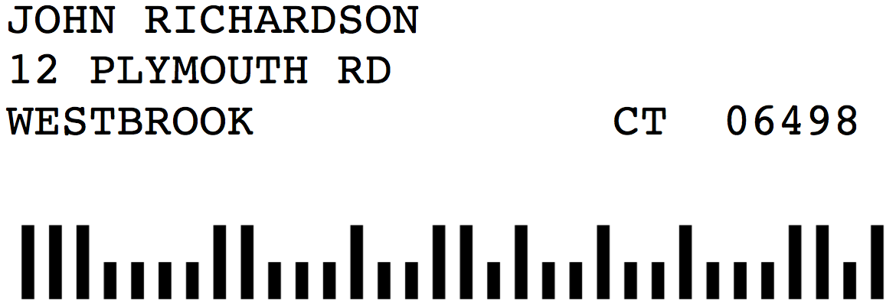
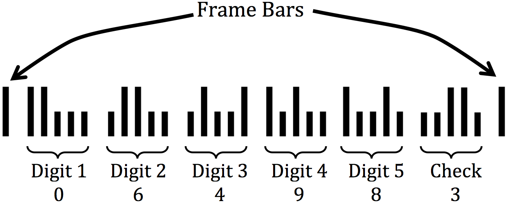
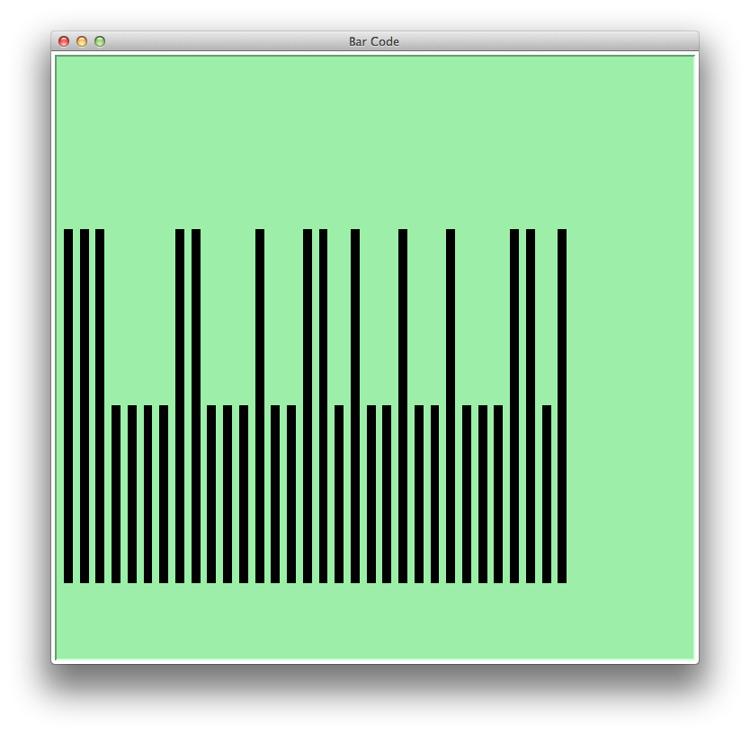

CS:1210:0AAA
Computer Science I: Fundamentals
Summer 2020
The University of Iowa
The College of Liberal Arts and Sciences
Department of Computer Science

HW 16 – USPS Bar Codes
The United States Postal System (USPS) often uses bar codes denoting the zip code, as shown in the following label:

On-Line Bar Code Generator
Here is a link to the on-line bar code generator I used it to make the bar code in the above example. You can use this link to check if your program is working correctly.
How a Bar Code is Constructed
The encoding scheme for the bar code is as follows:
- The code is made up of tall bars and short bars.
- The first bar and the last bar are always tall. These called the Frame Bars.
- The rest of the bars (the ones in between the Frame Bars) represent six digits. Each digit is made
up of five
bars (see below).
- The six digits consist of the 5-digit zip code plus one additional Check Digit.
- The Check Digit is calculated from the zip code. It is the number that must be added to the sum
of the zip code digits to bring that sum up to the the next multiple of 10. For example, the Check
Digit for zip code 06498 is calculated as follows:
- 0 + 6 + 4 + 9 + 8 = 27
- The next multiple of 10 is 30.
- So the Check Digit is 3, since 27 + 3 = 30
- 0 + 6 + 4 + 9 + 8 = 27
How to Represent a Digit with Five Bars
The five bars used for a digit are defined as follows:
| Digit | Bar 1 | Bar 2 | Bar 3 | Bar 4 | Bar 5 |
|---|---|---|---|---|---|
| 1 | Short | Short | Short | Tall | Tall |
| 2 | Short | Short | Tall | Short | Tall |
| 3 | Short | Short | Tall | Tall | Short |
| 4 | Short | Tall | Short | Short | Tall |
| 5 | Short | Tall | Short | Tall | Short |
| 6 | Short | Tall | Tall | Short | Short |
| 7 | Tall | Short | Short | Short | Tall |
| 8 | Tall | Short | Short | Tall | Short |
| 9 | Tall | Short | Tall | Short | Short |
| 0 | Tall | Tall | Short | Short | Short |
Completing the Example
Putting all these pieces together, we can now understand the bar code shown in the label above:

Assignment, Part I
Write a program that prompts the user to enter a zip code and then displays its bar code as a string.
Your program should use the vertical bar character | for tall bars and the colon character
: for short bars.
Below is a sample run of the program. The output of your program should match the sample (without the color).
|
|
Required Functions
Your program must use the following functions:
main()- This is where your high-level logic for your program is located.
getBarCode(zipCode)- This function takes an integer zip code as a parameter and returns its bar code as a String.
- This is the function that should be called from your
mainfunction. - You can assume the zip code will consist of exactly five digits. You don't have to check for this.
getBarCodeDigit(digit)- This function takes a single digit (0 - 9) as a parameter and returns its bar code (five bars) as a String.
- This function should be called multiple times form the
getBarCodefunction. - You can assume that the parameter is a single digit from 0 to 9. You don't have to check for this.
getCheckDigit(zipCode)- This function takes an integer zip code then computes and returns the integer Check Digit.
- This function should be called from the
getBarCodefunction. - You can assume the zip code will consist of exactly five digits. You don't have to check for this.
sumDigits(n):- This function takes a positive integer n as a parameter and then computes and returns the sum of the individual digits in n.
- This function should be called from the
getCheckDigitfunction.
Assignment, Part II
Modify your program from Part I so that is uses Python's turtle read the user input and to draw the bar code. Below is an example of what the bar code for 06498 would look like. The specific dimensions of your drawing don't need to match this example.

Grading
Please review the Grading Rubric for Programming Assignments and the Programming Style Guide.
What to Turn In
A Dropbox Folder has been created for this assignment in ICON. Please submit your Python program through ICON using that folder.